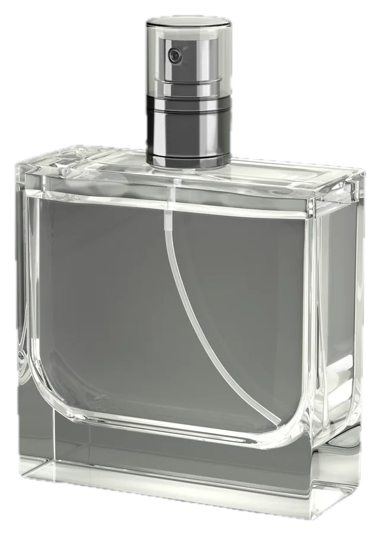
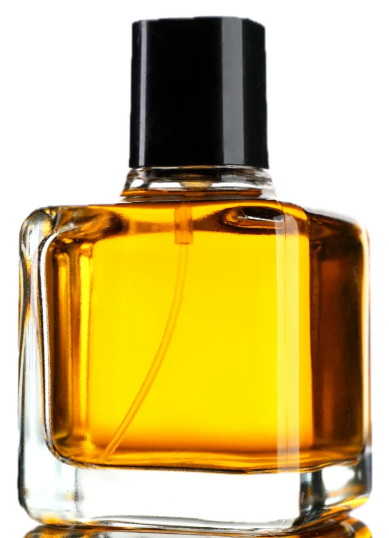

1Tap to spray
The product's own bottle "sprays": a mist cloud bursts out and spreads as far as its projection; the people it reaches turn and notice. Uses the product photo, so every perfume gets its own.
2Walk away from the wearer
Drag the slider: you move away from someone wearing it. "You'd notice it here" turns into "Out of its reach" where its projection ends. Distances are bands (hug, arm's length, table, room), never metres.

3You are the trail
Your cursor (or finger) becomes the wearer: it leaves mist wherever it goes. Soft vanishes almost at once, Heavy hangs in the air for seconds. Shows sillage before reading a word.
4Draw your path through a party
A room from above with guests. Draw a path with your finger; it leaves a trail that fades at the perfume's pace, and guests it passes while still fresh light up. If nobody draws, a wearer walks through on their own.
5Would they notice? (in real places)
Philippine everyday places seen from above: a full elevator, a jeepney, the office, a family dinner. The bubble shows who'd likely notice, "2 of 15 in the jeepney". Very concrete for gifting and office wear.

Sillage is the wake you leave.
6The boat wake (photo)
One aerial photo of a boat and its wake, the classic image for sillage. The level reveals more or less of the wake. Calm, editorial, explains the word instantly.

One drop in the room.
7A drop of ink (photo or video)
Ink spreading in water: the dot is you, the cloud is how far it projects. As a 4-second looped video (ink drop, no sound) it blooms on scroll; as a photo the level reveals more of the cloud.
8Whisper, talk, call across
Projection as a voice everyone understands: Intimate is a whisper, Moderate a normal chat, Strong calling across the room. Pure typography and sound waves, no photo needed.

Scroll: she walks past.
9Walk-by on scroll (video)
A short clip of someone walking past the camera that plays as you scroll; a warm haze follows her and hangs behind for as long as the sillage. Here a motion-blur photo stands in for the video.
Steps fade at the perfume's pace.
10Fading footsteps
Seen from above, a wearer crosses a marble floor. Each step leaves a warm mark; Soft fades almost under their feet, Heavy is still there when they've left the frame.